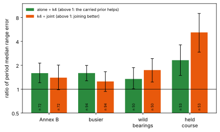
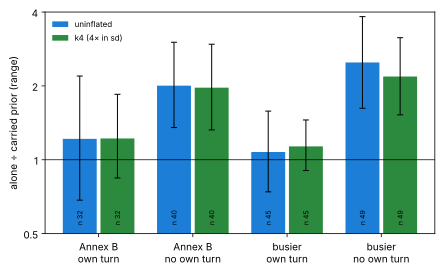
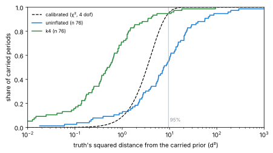

A carried prior across gaps
2026-11-20 · spec 030 · gitma2 · nothing trained
The question
- Spec 027: a carried start did not substitute for joining periods through their gaps
- Spec 030 carries information: the previous period's declared state and its Laplace covariance, run through the gap with Annex B's manoeuvre noise, as a Gaussian prior on the next period's starting state
- Uninflated, it was overconfident (truth inside its 95% region in about half of periods) and harmed some periods on one development seed
- Chosen on spent seeds by a rule written first: k4, the covariance 4× in sd
By the rule, a carried prior helps; joining still stands

Annex B (decides): alone ÷ k4 1.59 [1.21, 2.13]; no harm on any split (the rule could see only a loss over about a third). k4 ÷ joint 1.40 [0.98, 2.01], on the line. Other splits reported, not decided; wild bearings is a tail.
Where it helps: periods without their own ownship turn

On rows the period determines alone: 1.04 [0.77, 1.48], level. The uninflated prior does as well as k4 (0.99 [0.78, 1.25]): the inflation is not shown to matter.
Coverage: from too narrow to too wide

Annex B test: uninflated median d² 7.6, k4 0.51, calibrated 3.36. k4 covers because it is about 2.6× too wide; after inflation it is mostly a position band.
Not achieved
- A calibrated carried uncertainty: the process noise is mis-shaped and one history's covariance is too narrow in the tail
- Evidence that the inflation matters, or a comparison with the carried start registered (unregistered: 1.60 [1.05, 2.74])
- A real hand-over: another estimator's track, uncertain association, longer gaps
Next (owner's choice)
- A consistency flag on the carried prior's d², tested on the twice-as-bad periods
- A calibrated carried prior on spent seeds: scale near 1.5, shaped noise, mixture, candidate histories
- A stress split with longer gaps and more periods
Write-up: /blog/2026/11/20/carried-prior · Record: experiments/20261120-tl10 · Figures: scripts/research/tl10_charts.py